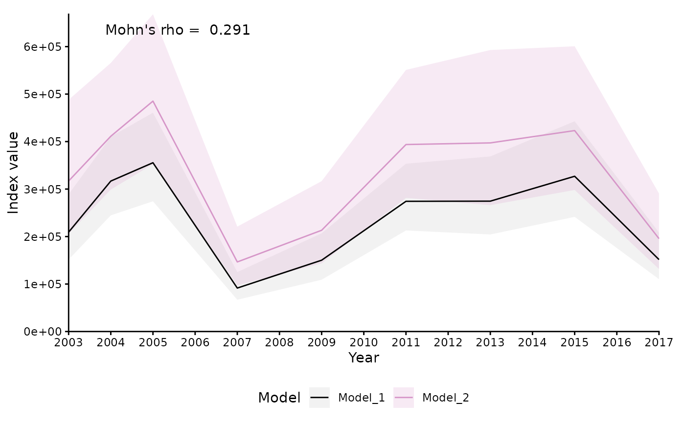
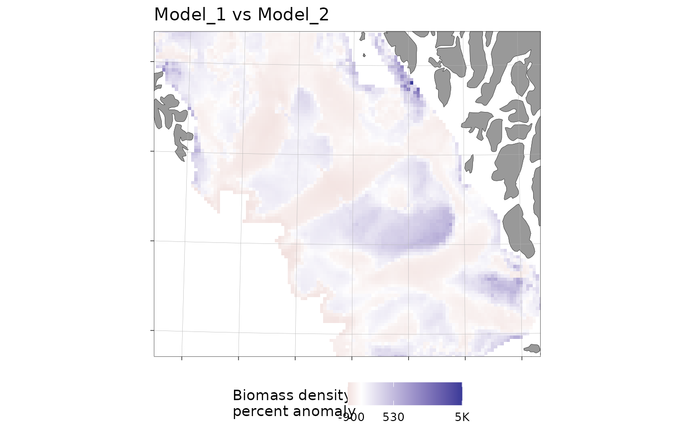

Plots the results of compare_models() as either a time series of survey
indices (type = "index") or spatial maps of prediction differences
(type = "spatial", rendered on a ggOceanMaps::basemap()).
Usage
# S3 method for class 'sdmTMB_model_comparison'
plot(
x,
type = "index",
index_divisor = NULL,
unit = NA,
mohn = FALSE,
viridis = FALSE,
spatial_response = "mean_pr_diff",
fill_prefix = NULL,
transform_color_scale = TRUE,
limit_rounding = 10,
break_rounding = 5,
base_size = 11,
...
)Arguments
- x
An object of class
sdmTMB_model_comparison.- type
Character.
"index"(default) or"spatial".- index_divisor
Optional numeric divisor applied to index values.
- unit
Character. Unit label for axes. If
NA,"Index value"is used.- mohn
Logical. Annotate the index plot with Mohn's rho (via
mohns_rho())? DefaultFALSE. Only applies whentype = "index".- viridis
Logical. Use the viridis palette for model groups? Default
FALSE(a fixed colour vector).- spatial_response
Character. Column mapped in spatial plots: one of
"mean","pr_mean"or"mean_pr_diff". Default"mean_pr_diff". See Details.- fill_prefix
Character. Prefix for the spatial-plot fill legend title (
type = "spatial"), e.g."Biomass density"or"CPUE". IfNULL(default), the legend title is"Percent anomaly"; otherwisepaste(fill_prefix, "percent anomaly", sep = "\n"). Models don't necessarily share a response variable, so this isn't inferred automatically.- transform_color_scale
Logical. Apply a signed square-root colour scale for spatial plots? Default
TRUE.- limit_rounding, break_rounding
Numeric rounding for map fill limits and breaks. Defaults
10and5.- base_size
Numeric. Base font size. Default
11.- ...
Currently ignored.
Details
For type = "spatial", each grid cell is compared between a fitted model
and the reference model for every year they share, on the response scale
(i.e. predict(..., type = "response"), e.g. density rather than log
density): diff = est - ref_est and pr_diff = 100 * diff / ref_est
(percent). spatial_response selects how these per-year values are
summarised across years into the single value mapped for each cell:
"mean":mean(diff)— the average absolute difference, in response units. Useful for the raw magnitude of disagreement, but not comparable across cells with very different baseline abundance."pr_mean":mean(pr_diff)— the average of the yearly percent differences. Because each year is divided by that year's own (possibly small) reference value, a handful of low-abundance years/cells can dominate this average with large percentage swings even when the absolute difference is small."mean_pr_diff"(default):100 * mean(diff) / mean(ref_est)— the percent difference between the across-year mean predictions (a ratio of means, not a mean of ratios). This is usually the more robust percent-based summary, since a cell's overall multi-year baseline is used in the denominator instead of each individual year's value.
Examples
# \donttest{
mesh <- sdmTMB::make_mesh(sdmTMB::pcod, c("X", "Y"), cutoff = 20)
m1 <- sdmTMB::sdmTMB(
data = sdmTMB::pcod, formula = density ~ 0 + as.factor(year),
time = "year", mesh = mesh, family = sdmTMB::tweedie(link = "log")
)
m2 <- sdmTMB::sdmTMB(
data = sdmTMB::pcod, formula = density ~ 0 + as.factor(year) + depth_scaled,
time = "year", mesh = mesh, family = sdmTMB::tweedie(link = "log")
)
nd <- sdmTMB::replicate_df(sdmTMB::qcs_grid, "year", unique(sdmTMB::pcod$year))
x <- compare_models(m1, m2, newdata = nd, object_crs = 32609)
#> ℹ `ln_tau_O` is an internal parameter affecting `sigma_O`
#> ℹ `sigma_O` is the spatial standard deviation
#> ℹ `ln_tau_E` is an internal parameter affecting `sigma_E`
#> ℹ `sigma_E` is the spatiotemporal standard deviation
#> ℹ `ln_kappa` is an internal parameter affecting `range`
#> ℹ `range` is the distance at which data are effectively independent
plot(x, mohn = TRUE)

plot(x, type = "spatial", fill_prefix = "Biomass density")

# }